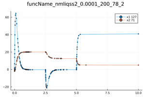
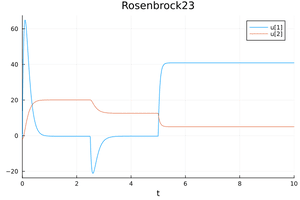
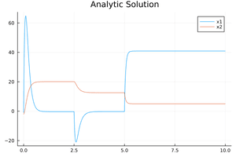

Linear Time Invariant with events
The same previous LTI example is extended to contain events (discontinuities). At times 2.5 and 5.0 the differential equations are changed. This is modeled through discrete variables passed in the p vector. The events are defined through $if-statements$.
using QuantizedSystemSolver
function funcName(du,u,p,t)
du[1] = p[1]*u[1]+p[2]*u[2]+p[3]
du[2] = p[4]*u[1]+p[5]*u[2]+p[6]
if t-2.5>0.0
p[1]=-22.0
p[3]=1000.0
end
if t-5.0>0.0
p[2]=-20.0
p[5]=-10.0
p[6]=-0.5
end
end
tspan = (0.0,7.0)
u0= [-1.0, -2.0]
p=[-20.0,-80.0,1600.0,1.24,0.01,0.2]
prob = ODEProblem(funcName,u0,tspan,p)
#Solve the problem
sol = solve(odeprob,nmliqss2()abstol = 1e-4, reltol = 1e-2)
p1 = plot(sol);The analytic solution is given by the following equations:
using Plots
function A1()
x1(t)=105.83453057676363*-8.83362618880318*exp(-10.943696474115944*t)-127.91533865757171*-7.303470585390368*exp(-9.046303525884058*t)-0.32323232323231316
x2(t)=105.83453057676363*exp(-10.943696474115944*t)-127.91533865757171*exp(-9.046303525884058*t)+20.08080808080808
return (x1,x2)
end
function B1()
x1(t)=-5.300798816237515e17*-12.649850456341543*exp(-15.675814565863513*t)+9.014692147675046e7*-5.10014954365846*exp(-6.314185434136489*t)-0.26267932915740405
x2(t)=-5.300798816237515e17*exp(-15.675814565863513*t)+9.014692147675046e7*exp(-6.314185434136489*t)+12.572236815518284
return (x1,x2)
end
function C1()
x1(t)=4.746452513218909e42*-7.537612988819599*exp(-19.346640106136302*t)+8.75190264440514e27*-2.139806366019111*exp(-12.653359893863698*t)+40.890522875817
x2(t)=4.746452513218909e42*exp(-19.346640106136302*t)+8.75190264440514e27*exp(-12.653359893863698*t)+5.020424836601308
return (x1,x2)
end
function x1(t)
if t<2.5
return A1()[1](t)
elseif t<5.0
return B1()[1](t)
else
return C1()[1](t)
end
end
function x2(t)
if t<2.5
return A1()[2](t)
elseif t<5.0
return B1()[2](t)
else
return C1()[2](t)
end
end
p1=plot!(x1,0,10,label="x1")
p1=plot!(x2,0,10,label="x2")Then use DifferentialEquations instead of QuantizedSystemSolver, and use callbacks instead of $if-statements$.
using DifferentialEquations
function funcName(du,u,p,t)
du[1] = p[1]*u[1]+p[2]*u[2]+p[3]
du[2] = p[4]*u[1]+p[5]*u[2]+p[6]
end
tspan = (0.0,10.0)
u0= [-1.0, -2.0]
p=[-20.0,-80.0,1600.0,1.24,0.01,0.2]
prob = ODEProblem(funcName,u0,tspan,p)
absTol=1e-4
relTol=1e-2
function condition1( u, t, integrator)
(t-2.5)
end
function condition2( u, t, integrator)
(t-5.0)
end
function affect1!(integrator)
p[1]=-22.0
p[3]=1000.0
end
function affect2!(integrator)
p[2]=-20.0
p[5]=-10.0
p[6]=-0.5
end
cb1 = ContinuousCallback(condition1, affect1!,nothing; )
cb2 = ContinuousCallback(condition2, affect2!,nothing; )
cbs = CallbackSet(cb1, cb2)
solRosenbrock23 = solve(prob,Rosenbrock23(),callback = cbs,abstol = absTol, reltol = relTol)
p1=plot!(solRosenbrock23,title="Rosenbrock23")The plots are displayed below:
LTI with events using QuantizedSystemSolver.jl

LTI with events using DifferentialEquation.jl

LTI with events using the analytic solution
